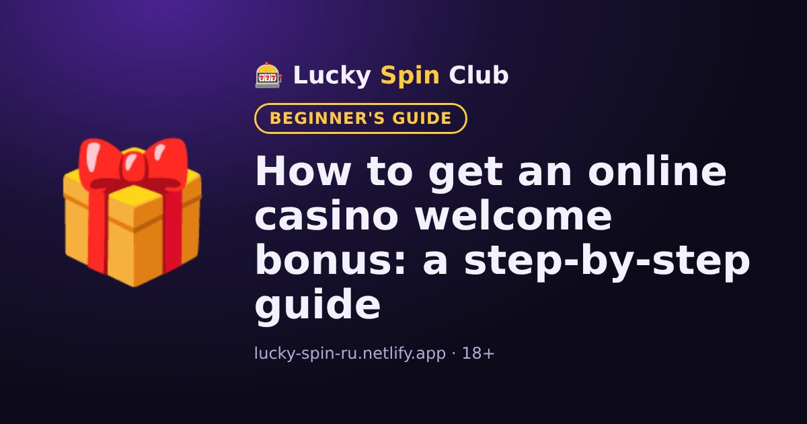

How to get an online casino welcome bonus: a step-by-step guide

Updated: 6 November 2026
A welcome bonus is a special offer for new players, usually given for the first deposit. Here is how to get it without mistakes.
Step 1. Sign up
Tap “Sign up” on our site. You will land on the casino's official registration page. Enter your email or phone number, create a password and choose the account currency. The currency often cannot be changed later, so choose the one you will deposit in.
Step 2. Confirm your account
Confirm your email or phone. Later the casino may ask for documents to verify your identity, usually before the first withdrawal. Use your real details, or withdrawals may be blocked.
Step 3. First deposit
Before depositing, open the “Bonuses” section and check the minimum deposit for the bonus. If you deposit less, the bonus will not be credited.
Step 4. Understand wagering
Wagering shows how many times the bonus must be bet before it can be withdrawn. For example, a $100 bonus with x35 wagering means placing bets worth $3,500 in total. The lower the wagering, the better the bonus.
Common mistakes
- Not reading the bonus terms before depositing.
- Betting more than the maximum allowed stake while wagering; the bonus may be cancelled.
- Playing games that do not count towards wagering.
- Creating a second account, which the rules forbid.
Ready to try? Signing up takes about a minute.
🎁 Sign up and get the bonusFrequently asked questions
Can I get a welcome bonus without a deposit?
Usually the welcome bonus is given for the first deposit. No-deposit bonuses are rarer and normally have stricter wagering terms. Current offers are listed in the casino's “Bonuses” section.
Can I withdraw bonus money straight away?
No. The bonus must first be wagered according to its terms. Until then it cannot be withdrawn, and requesting a withdrawal may cancel an active bonus.
Can I decline a bonus?
Yes, at most casinos you can decline a bonus in your account or simply not activate it. Then you play with your own money without wagering restrictions.